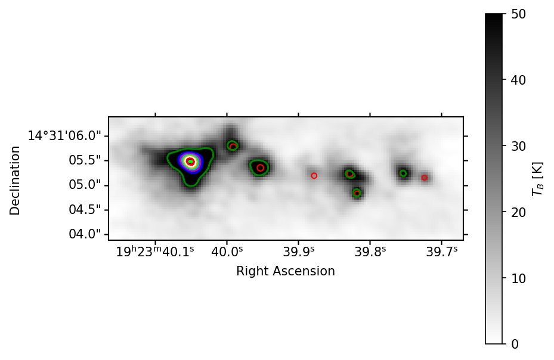
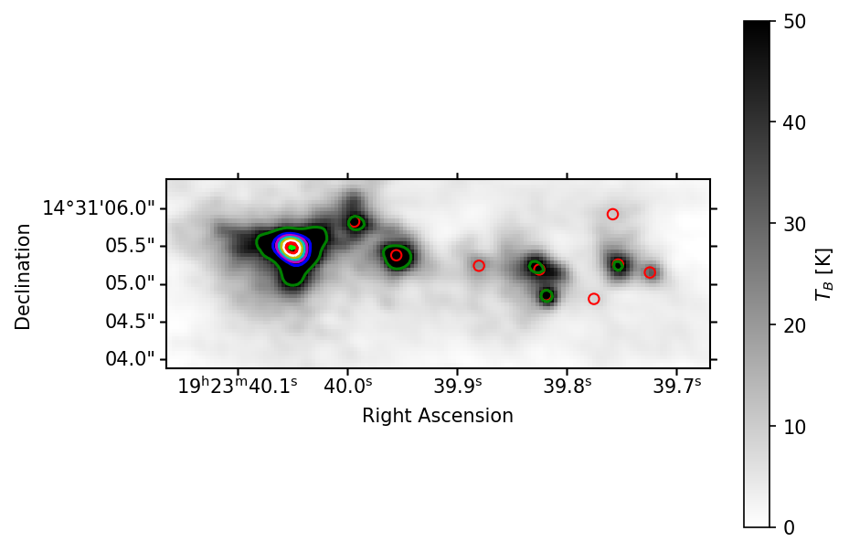
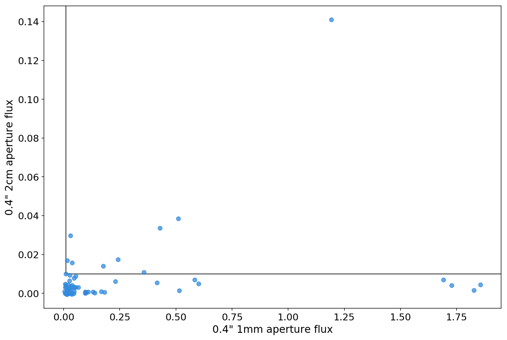
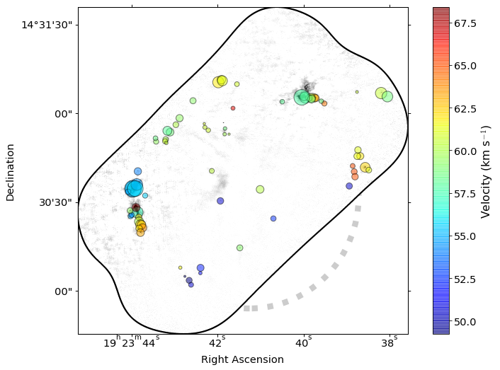
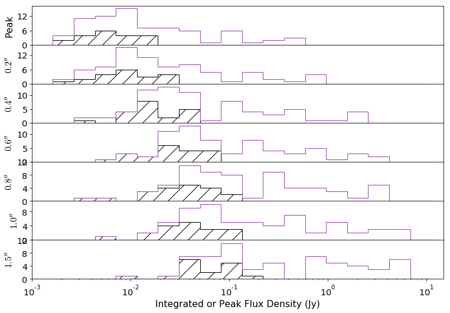

The compact mm sources of W51 and Sgr B2
and what this suggests for analysis of ALMA-IMF
Adam Ginsburg
Source Extraction
Two methods were explored in Ginsburg+ 2017 section 3.1.1:
- Dendrogram extraction:
- Automated, reproducible
- Problematic for extended structures we're not interested in (HII regions)
- Difficult to use if noise varies (e.g., if bright sources produce noisy sub-fields)
- Hand extraction
- Mildly tedious, unreproducible (e.g., on simulations)
- Reliable: sources are real if you say they are
- Difficult to estimate completeness
Hand-selected cores

Dendrogram-selected cores

Hand-selected cores

Dendrogram-selected cores

Source Photometry (Section C.2)
Contour-based photometry is not great for core or protostar analysis:
- Can't compare contour-based to hand-extracted
- Can't (shouldn't) use contours to extract from other wavelengths (e.g., free-free correction)
- Contours require 'truncation correction' because they only go to the specified noise threshold, but signal goes all the way down
So, we use circular apertures.
- Multiple apertures yield a radial profile
- "Concentration" is a measure of source structure
Free-free contamination measurement
Temperature Inference
Interpolation of HiGal data does poorly; hot (~100-200K sources dominate)
Fred will tell us about PPMAP later?
Used line \(T_B\) to get lower-limit temperature:
- Assuming dust & gas are mixed, \(T_{dust}\geq T_{B,max}\)
- For each source, extract spectrum across full band
- Fits to each line for each source, bad ones rejected
Spatial and Spectral distribution
Sources are extended: What constitutes a 'core'?
